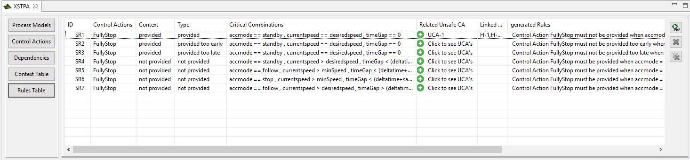

This View will show any entry which is marked as "Vulnerable" in any context. You can link any unsecure control actions with these entries, by clicking into the cell "Related Unsecure CA". This will open a small Dialog with all available "Unsecure Control Actions". Then you can link them, similar to the dependencies view. As soon as this table has been opened xstpasec will automatically generate refined rules out of the vulnerable combinations these can be seen in the "generated Rules" column You will find three Buttons on the side of the Table. The first one creates the "LTL Table", which is currently only used for export, but it will be enhanced in the future. The second Button opens the Export Dialog which is the same as in XSTAMPP.
